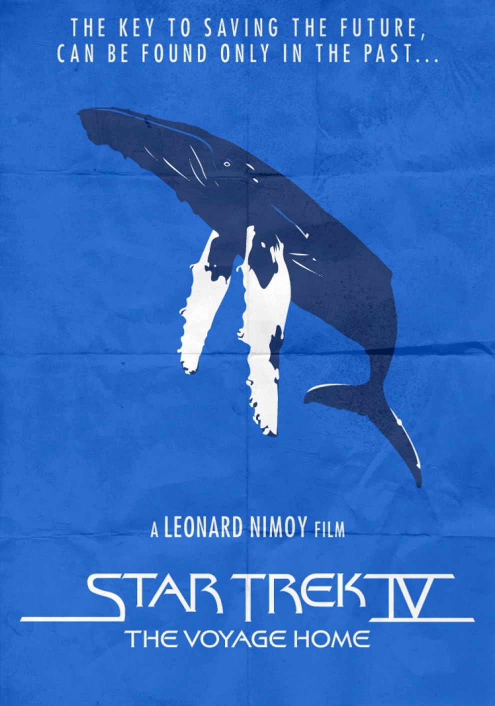

Today’s Agenda
Section 1: Introduction to Environmental Policymaking
What is the “Trouble with Wilderness”?
Justin Leinaweaver (Spring 2026)
Prep for Class
Review Canvas submissions
Bring VIDEO CLIP (Disney-Hiawatha.mp4) on USB for classroom computer
Welcome back everybody.
FIRST, now that you’ve reviewed the syllabus any questions on the plan of the class or the course policies?
SECOND, did everybody submit their pre-class assignment to earn participation for today?
My Notes: Cronon’s Argument
Therefore, wilderness is a human creation and our mythologizing about it makes it harder to solve environmental problems.
Therefore, our current understanding of the wilderness is at the root of many of our serious environmental problems.
Therefore, wilderness is a human creation and it cannot solve the problem of “our culture’s problematic relationships with the nonhuman world” (p8)
Up to the 18th century “wilderness” meant deserted, savage, desolate, barren, and a waste (8).
Biblical references to the wilderness as a place of “moral confusion and despair” (8)
“Wilderness, in short, was a place to which one came only against one’s will, and always in fear and trembling. Whatever value it might have arose solely from the possibility that it might be”reclaimed” and turned toward human ends…” (9).
19th c forward, the wilderness is a temple of restoration
By the end of the 19th century the meaning of wilderness has been transformed
Thoreau in 1862 could declare wildness to be the preservation of the world
John Muir arrived in the Sierra Nevada in 1869, he would declare, “No description of Heaven that I have ever heard or read of seems half so fine.”
US begins creating national parks with Yellowstone in 1872
The seemingly unprecedented battle over the dam that flooded the Hetch Hetchy valley (1908-1913)
Wilderness Transforms 1: Domestication of the Sublime (10-13)
Wilderness once connected to the “awesome power of the sublime”; Wordsworth describing his climbing the Alps as one of terror when brought face-to-face with the divine. A sense of awe/dismay, not joy/pleasure.
By the second half of the 19th century tourism into the wilderness had begun to domesticate the sublime; transform it into a “sacred temple” that offered restoration not fear.
Explaining the transformation 2: The end of the Frontier
Belief in the frontier as source of national renewal; To be an American meant to be connected to the land, to a more primitive existence that inspired vigor, individualism and democracy (13).
By the 1890s the argument was that the frontier was being lost and that meant wilderness needed to be preserved.
Perception by many elites that civilization was sapping men of their rugged manliness, feminizing them and that they needed wilderness experiences to compensate.
The quasi-religious aspects of modern environmentalism are very problematic (15-)
Wilderness as revitalizing frontier deeply ironic.
Wilderness as a toy of the well-to-do, projecting their fantasies onto the landscape (15)
“Virgin” wilderness ignores native populations that called it home; removing them to make it uninhabited shows just how artificial this construct is.
Making the wilderness safe for tourists does not reflect actual violence of the frontier
“Only people whose relation to the land was already alienated could hold up wilderness as a model for human life in nature, for the romantic ideology of wilderness leaves precisely nowhere for human beings actually to make their living from the land” (17).
Wilderness that places humanity outside of nature poses a serious threat to responsible environmentalism
The central paradox is that wilderness places humanity outside of nature which poses a serious threat to responsible environmentalism at the end of the twentieth century (17).
If protecting wilderness is the metric for a good society then we deny ourselves “hope of discovering what an ethical, sustainable, honorable human place in nature might actually look like.”
By pretending our “real home” is in the wilderness, we allow ourselves to ignore and avoid dealing with the problems where we actually live.
“Wilderness” as an untouched and pure thing is too frequently the implicit rationale for pursuing “environmental” ends (see endangered species act example p18).
An absurd paradox: “if nature dies because we enter it, then the only way to save nature is to kill ourselves” (19).
“Idealizing a distant wilderness too often means not idealizing the environment in which we actually live, the landscape that for better or worse we call home. Most of our most serious environmental problems start right here, at home, and if we are to solve those problems, we need an environmental ethic that will tell us as much about using nature as about not using it” (21).
“Indeed, my principal objection to wilderness is that it may teach us to be dismissive or even contemptuous of such humble places and experiences” (22). e.g. the flower or tree in your yard.
We must abandon “the dualism that sees the tree in the garden as artificial -completely fallen and unnatural -and the tree in the wilderness as natural -completely pristine and wild. Both trees in some ultimate sense are wild; both in a practical sense now depend on our management and care” (24).
Setting aside end of essay that makes the case for a healthier approach to nature / wilderness. All important in ethics terms but not for our definitional exercises
Wilderness is a human creation and, therefore, it cannot solve the problem of “our culture’s problematic relationships with the nonhuman world” (p8)
Cronon, W. (1996). The Trouble with Wilderness or, Getting Back to the Wrong Nature. Environmental History . 1(1), 7–28.
For today I assigned you an EXCELLENT article by the historian William Cronon.
This article is also Chapter 1 of his book Uncommon Ground: Rethinking the Human Place in Nature
Book blew my damn mind as an undergrad
Transformed my thinking about environmental politics and policy
Before we dive into the argument, let’s root ourselves in one of the key words in the title of the article: Wilderness
Before doing this reading, how would you have defined the “wilderness”?
What pops into your mind when you hear that word?
Something like this, no?
This is the first image that pops up on Wikipedia when you search for the word, “wilderness”
Has anybody had a “wilderness” experience in the past that was important to them or that influenced how they feel about environmental issues?
Anything you’re willing to share?
If we all agree that this is “the wilderness,” then what characterizes this concept in typical usage?
“Wilderness or wildlands (usually in the plural) are natural environments on Earth that have not been significantly modified by human activity, or any nonurbanized land not under extensive agricultural cultivation” (The National Weather Service; The International Wilderness Leadership Foundation).
This is the defintion that leads off the Wikipedia entry
Cites both the National Weather Service and The International Wilderness Leadership Foundation
So, government agency experts and a nonprofit agree!
SLIDE : However, this is not the simplest phrasing!
“Wilderness or wildlands (usually in the plural) are natural environments on Earth that have not been significantly modified by human activity, or any nonurbanized land not under extensive agricultural cultivation” (The National Weather Service; The International Wilderness Leadership Foundation).
“A wilderness is an area of land that has been largely undisturbed by modern human development” (National Geographic).
National Geographic defines wilderness much more simply
Wilderness, in common usage, refers to essentially two qualities or characteristics:
Must be a “natural” environment, and
Must be mostly untransformed by human activity
So, how would Cronon react to this definition?
The Trouble with Wilderness
When Cronon looks at these two images, what does he see?
(Two things created by humans!)
I’m not going to lie, being told that the “wilderness” is a human creation BLEW MY MIND .
SLIDE : Why do I say “blew my mind”?
I came to my love of the environment a long, long time ago.
Being a kid in the 1980s and 90s meant coming of age in an era where environmentalism was our new mission
We’d finished off the Soviet Union, the economy was booming and our society needed a new villain
Enter Pollution and Polluters
We got it in school, in the cartoons we watched and even in our extra-curricular activities
SLIDE : And we definitely got it in our movies!

Does anybody know the plot of Star Trek IV?
I remember sitting in the theater watching this movie and thinking it made perfect sense
Whales, being natural and ancient, communicate on a level higher than we understand
So, of course, an advanced alien species coming to earth would seek to commune with the whales
And since we wiped them out, we were to be destroyed
If we couldn’t protect the whales we probably deserved it!
All of this led me quite naturally into community activism.
I volunteered with Sierra Club, interned with the Florida Public Interest Research Group (PIRG), etc.
Then I chose majors and classes in college that I thought would help me solve environmental problems
SLIDE : Underpinning all of this activity was an argument that was deep in me that I had never bothered to think much about…
My Implicit Argument
Wilderness is irreplaceable and vital to human life
We must protect things that are irreplaceable and vital
Some of our actions destroy the wilderness
Once destroyed, true wilderness can never be restored
Therefore, we must stop those actions!
Using ‘wilderness’ here as synonym for nature or the natural world.
Does anybody else recognize this argument for themselves?
So, sticking with the big picture here, how does starting from this argument make solving environmental problems harder?
It is a series of absolutes with essentially no room for compromise
Any action that alters wilderness, destroys it
And every bit of wilderness destruction harms us irreparably
Irreparably being key here: There is no possible restoration in this argument.
And how does Cronon’s argument that “wilderness is a human construct” challenge this way of thinking?
(In every way possible without disagreeing that we must take action!)
SLIDE : So, let’s dig into Cronon’s argument
The Trouble with Wilderness
(Cronon 1996)
Therefore, wilderness is a human creation and our mythologizing about it makes it harder to solve environmental problems.
Cronon makes a number of important arguments in this chapter but I’ve tried to focus us in on the part that’s most relevant to our class.
Today I want us to do three things: Clarify this argument, critically analyze it and then reflect on its lessons for our work as environmental problem-solvers.
Does everybody have this written down?
This is our touchstone for the day and we should keep referring back to it.
The Trouble with Wilderness (Cronon 1996)
Premise 1
Premise 2
Premise 3
Therefore, wilderness is a human creation and our mythologizing about it makes it harder to solve environmental problems.
Every argument can be thought of as a series of premises leading to a conclusion.
A “premise” is just a claim (assumption) being used to support the conclusion.
The ultimate goal is an inductively logical argument
That means an argument in which the premises directly support the conclusion
In other words, if you accept the premises as true, is the conclusion more likely to be true?
A very low bar, but you’d be shocked how many arguments in our political arena fail this test
Let’s now evaluate the premises in Cronon’s argument.
The Trouble with Wilderness (Cronon 1996)
Therefore, wilderness is a human creation and our mythologizing about it makes it harder to solve environmental problems.
The first key premise in Cronon’s argument focuses on describing societies’ relationship with the wilderness prior to 1800.
Groups, your first job is to explain this premise to me and evaluate the evidence he provides that it is accurate
Questions on what I want?
Report back!
What does the premise mean?
What does it mean to think of the wilderness as “sublime”?
(Synonyms of sublime: Fear, reverence, dread, fright, terror)
What evidence does he provide and is it convincing? Why or why not?
SLIDE : Let’s take a look at the art for ourselves!
“Landscape with waterfall”
Talk to me about the wilderness here
“An Avalanche in the Alps”
Talk to me about the wilderness here. How does it make you feel?
Notes for You
“An Avalanche in the Alps”
1740–1812
De Loutherbourg was born in Strasbourg, France and had a successful career in Paris as a landscape painter. In 1771 he moved to London and began also working as a set and costume designer. In this scene, De Loutherbourg combines nature and human drama, to theatrical effect. An avalanche is shown advancing towards three figures and a dog. De Loutherbourg has captured the moment before they are overwhelmed by the powerful natural force.
“A Shipwreck in Stormy Seas”
Talk to me about the wilderness here. How does it make you feel?
Very subtle messaging here, right?
Civilization, e.g. city in the distance, is shining in the sun
What happens to the men who venture out to sea? Lightning, wind, whipping water, death
Last one from this period and it’s a VERY famous painting.
“Expulsion from the Garden of Eden” (or Expulsion from Paradise)
Ok biblical scholars, what’s being depicted here?
Compare and contrast the Garden of Eden to the wilderness in this painting for me. What stands out for you?
It’s not just the painters reflecting this definition either.
Some intriguing references to incredible writers of the period
How did Wordsworth describe his experiences climbing the Alps in 1936?
(p11; emotions remarkably close to terror; awe in the face of a near-religious experience)
What about Thoreau’s climb up Mount Katahdin in 1846?
(An unwelcoming sort of nature, punishing, dismissive and not happy to see you there.)
Pre-19th Century:
The Wilderness is Sublime
In short, the wilderness is a dangerous place.
Is this similar to how we use the words sublime and awesome today?
In a world surrounded by sublime wilderness, what is civilization?
And, if civilization is our only protection, what is our duty when it comes to dealing with wilderness?
Time for the second premise, let’s mix up the groups!
Go sit with your new group!
The Trouble with Wilderness (Cronon 1996)
Therefore, wilderness is a human creation and our mythologizing about it makes it harder to solve environmental problems.
The second premise in Cronon’s argument focuses on how changes in American society changed our definition of the wilderness
Groups, your next job is to explain this premise to me and evaluate the evidence he provides that it is accurate
Report back!
What does the premise mean?
How has american society “developed”?
What is a “domesticated” wilderness?
What myths needed to be indulged?
What evidence does he provide and is it convincing? Why or why not?
SLIDE : Let’s once again take a look at the art for ourselves!
“In the Mountains”
Talk to me about the wilderness here. How does it make you feel?
Even the shadows, the places of “darkness” are peaceful and welcoming.
“A Walk in the Forest”
Talk to me about the wilderness here. How does it make you feel?
Just a lovely day, going for a hike.
Post-19th Century:
Wilderness as a temple of restoration
So, Cronon, who is by training a historian, looks to our art as a reflection on human society and our values over time.
He argues this change in representation is so stark something important must have fundamentally changed in our society.
What do we think of this method for measuring humanity’s relationship to nature over time?
Do you believe we can interpret changes in art as implying changes in society? Why or why not?
Cronon now has to shift from identifying his first puzzle to trying to explain it.
According to Cronon, what two things happened in the middle of the 19th century to so dramatically transform the human relationship to the wilderness?
(Domestication of the Sublime, p10-13)
(Myth of the end of the frontier)
What does he mean by domestication of the sublime? How did it happen?
By the turn of the 19th century our cities were filthy
Here we see a photo of London in 1890
In short, economic development had far outpaced technology and public works; (Link ).
From reporting about London at the time:
“It had choking, sooty fogs; the Thames River was thick with human sewage; and the streets were covered with mud.”
“mud” was a euphemism for horse poop mixed with urine and dirt.
Shopkeepers complained the ammonia in the horse urine was so strong it would discolor their shop fronts and discourage shoppers due to the smell.
There was a constant stench of filth from blocked drains and cesspools below houses.
The air itself was so filled with soot and smoke the “respectable” people had to go home to wash their hands and faces multiple times each day to look presentable.
Small wonder then that by the second half of the 19th century the wilderness had become a tourist destination.
As Cronon notes: Not a place of fear, but a temple of restoration (the “sacred temple”).
As our lives became more automated, as our cities grew, our eyes shifted to the natural world and we saw its beauty and cleanliness contrasted with our creations.
Ok, so that’s the first big transformation.
The second concerned the frontier itself.
What is the myth of the end of the frontier and what role did it play in changing the meaning of wilderness?
(By the 1890s the argument was that we were running out of frontier land and that meant wilderness needed to be preserved.)
To be an American meant to be connected to the land, to a more primitive existence that inspired vigor, individualism and democracy (13).
The frontier was viewed as a source of national renewal
A growing perception by many elites that civilization was sapping men of their rugged manliness, feminizing them and that they needed wilderness experiences to compensate.
Why does Cronon describe this as a doubly ironic process?
Wilderness as Restorative: Irony Part 1
The first big irony was that this “wilderness is a magic temple of manliness” was not meant for you.
The marketing of the wilderness was aimed at the well-to-do, not the public at-large.
Luxury safaris and big game hunts allowing the rich to project their fantasies onto the landscape.
Wilderness preservation was for the rich who needed an escape from the filth of the cities, the weakness created by white collar jobs and the rest of us!
Wilderness as Restorative: Irony Part 2
The second painful irony in this “wilderness is a magic temple of manliness” is that creating the paradise required extensive violence against the people who had lived there.
In order to create a “virgin” wilderness we had to remove all the native populations that called it home.
That we removed so many in order to make the land wilderness SHOWS US how artificial this construct is.
So, where does that leave us?
Why does our modern conception of the wilderness present such a serious problem for today’s world?
Mix up the groups one last time!
SLIDE : On to the final premise!
The Trouble with Wilderness (Cronon 1996)
Pre-19th century humans define the wilderness as sublime
As American society “develops” we needed a domesticated wilderness that could indulge our myths
A romanticized wilderness creates an impossible standard of management
Therefore, wilderness is a human creation and our mythologizing about it makes it harder to solve environmental problems.
The final premise in Cronon’s argument focuses on how, basically, I am the problem.
Groups, your last job today is to explain this premise to me and evaluate the evidence he provides that it is accurate
Report back!
What does the premise mean?
What evidence does he provide and is it convincing? Why or why not?
Fundamentally, Cronon argues that I was the problem.
The quasi-religious aspects of modern environmentalism are very problematic (15-)
The central paradox is that wilderness places humanity outside of nature which poses a serious threat to responsible environmentalism at the end of the twentieth century (17).
“Only people whose relation to the land was already alienated could hold up wilderness as a model for human life in nature, for the romantic ideology of wilderness leaves precisely nowhere for human beings actually to make their living from the land” (17).
Let’s dig into this key element that “all human action” related to the environment is now problematic.
Growing up, who did your teachers tell you lived within and of the land?
It was part of the reason we justified taking their land from them.
They were not “making improvements” to it that would represent sufficient civilization that makes ownership meaningful.
Growing up, what were you told about the relationship between native americans and the land?
Growing up, was anyone every exposed to Disney’s animated cartoon of Hiawatha?
Only if tons of time left, show the Disney Hiawatha video
(PLAY: (7 mins) Disney’s Hiawatha cartoon.)
0:00 - 1:30 Sets the story in motion
3:00 - 5:05 Can’t bring himself to kill the rabbit
6:00 - End Hiawatha comes across a bear and is saved by the forest creatures
What does this cartoon teach us about the relationship between native americans and the environment?
Are depictions like this disrespectful to native Americans? Why or why not?
Does it change your feelings if I tell you that Hiawatha was a historical figure? A great leader of the Iroquois nation?
Infantilizes the native Americans, doesn’t it?
Here’s one of the keys to unmaking our myths
The idea any human society ever lived in perfect balance with nature is a dangerous myth.
It has set up an impossible standard for what makes “good” environmental policy.
Man, in all of our societal forms, has always managed nature in order to survive.
For example, native groups frequently used forest fires to reshape the landscape and clear out underbrush in forests.
Makes it easier to move through them and see what you are hunting.
Fire can also encourage new shoots to start on the ground which attracts hungry deer.
In other words, forest fires created prime hunting ground.
Bottom line, they dramatically reshaped the local ecosystems to make hunting easier.
We have evidence of Native American fish farming.
Rivers dammed or redirected to capture fish or encourage them to breed in pools where collection was easier
River ecosystems dramatically transformed so we could more easily feed ourselves.
Seal hunting was easy because the seals were docile and could be herded like cattle.
Evidence that some seal populations greatly diminished by native hunting techniques.
These modifications were not massively disruptive because of small population numbers.
Let me be clear, none of this evidence is meant to convince you that Native tribes were as destructive as our modern societies.
However, we need to learn to build our understandings from actual history and not fairy tales.
Human populations have always had to manage environmental resources in order to survive.
When our population numbers are low, these actions are WAY less destructuve
The Trouble with Wilderness (Cronon 1996)
Pre-19th century humans define the wilderness as sublime
As American society “develops” we needed a domesticated wilderness that could indulge our myths
A romanticized wilderness creates an impossible standard of management
Therefore, wilderness is a human creation and our mythologizing about it makes it harder to solve environmental problems.
So, let’s root ourselves back in the subject of our class: Solving environmental problems.
How does Cronon’s argument help us think about that challenge?
Encourage THIS discussion
(SLIDE : The modern conceptualization of the wilderness has made compromise between environmentalists and industry almost impossible)
(SLIDE : Recognize wildness around us and work to respect it everywhere)
1. The wilderness myth makes compromise impossible
The wilderness myth makes compromise impossible and this thinking infects both sides of these debates
For many environmentalists, a romanticized wilderness means that:
Many are fighting to protect a wilderness that does not exist (e.g. a “natural world” devoid of human impact), and
Compromise of any kind on wilderness protection shrinks something that cannot be replaced
1. The wilderness myth makes compromise impossible
For many “polluters” or users of wilderness resources, a romanticized wilderness means that:
There is no point trying to work with environmental activists who will not accept any compromises you offer and see your actions as reprehensible, and
Once a wilderness is unmade, future damage to that area is no big deal
These are the tar sands in Canada
Fundamentally, Cronon is arguing that our conception of wilderness itself is creating many, many of our most serious environmental problems.
Ultimately, has Cronon convinced you that the “wilderness” is an obstacle to solving environmental problems? Why or why not?
Out of curiosity, where does Cronon take this argument in the article?
2. Recognize the wildness around you, and
consider the needs of the people living on Earth
Cronon’s First Answer: Recognize that “wilderness” is a social construct
We must abandon “the dualism that sees the tree in the garden as artificial…and the tree in the wilderness as natural… Both trees in some ultimate sense are wild; both in a practical sense now depend on our management and care ” (24).
This means we have responsibilities to resource management both in the artifical “wild places” AND where humans live too!
Cronon’s Second Answer: Environmental problem-solving must begin at home and must consider the needs of the people (the creatures?) living on the Earth.
By pretending our “real home” is in the wilderness, we allow ourselves to ignore and avoid dealing with the problems where we actually live.
What do you think of this conclusion?
Ultimately, this article, and the book it comes from, helped me think very differently about environmental policy and solving problems in a community.
I realized I should not assume that the construct I like (wilderness) is automatically “better than” or “more valuable than” the one you like (industry, jobs, feeding your family).
I also came to see how humans have managed “the wilderness” in an active way which means I shouldn’t oppose management and use policies simply to keep things to a “pristine” standard that never existed.
SLIDE : To end today, let’s talk about this in broader terms for a moment.
Setting the Stage for Problem-Solving
All environmental concepts are contested
Your chosen definition narrows your options
Many disputes arise from conflicting definitions
As I mentioned last week, this first section of our class focuses on building our foundations for thinking about policy-making.
Cronon’s arguments help us solve real-world environmental problems by thinking critically about problem definitions.
REVEAL : 1) We must remember that all of the concepts related to environmental problems will be contested (e.g. fought over),
No matter how obvious you think the problem is, I assure you that all of the stakeholders view it somewhat differently
REVEAL : 2) Your chosen definition automatically narrows the options of policies you think are acceptable vs not
REVEAL : 3) Conflicts over problem definitions often drive the most serious disputed regarding environmental problem.
The most effective policy solutions begin with clear definitions that generate buy-in from the relevant stakeholders
Questions on this?
For Next Class
Auditing the “wilderness” in our backyard
Next week we set the table for thinking about policymaking as problem-solving
To kick that off I want you to explore our campus while thinking about the environmental problems we have overcome AND the problems we still face
For this exercise I want you to adopt a very broad definition of the environmental concept.
This can certainly mean the plants, animals, air and soil, but should also reflect other aspects of our well-being (e.g. transportation, food, safety, etc.).
To be clear, I am NOT trying to create busy work for you.
We are all creatures of habit, and the routine tends to disappear from our attention
I’m sure everyone here has bought a poster or wall hanging or anything for their room and had the experience of over time no longer seeing it there
Given the size of our campus I don’t think it is possible to spend an hour outside and not begin to notice a million things you have tended to blow past in your daily routine.
So, please go spend some time outside and ask yourself to notice that which you normally miss!
Questions on the assignment or any of our work from today?
Canvas Assignment: Auditing the “wilderness” in our backyard (10pts)
Spend an hour exploring the Drury campus and surrounding streets thinking critically about the “wilderness” in our backyard. For this exercise I want you to adopt a very broad definition of the environmental concept. This can certainly mean the plants, animals, air and soil, but should also reflect other aspects of our well-being (e.g. transportation, food, safety, etc.).
What are AT LEAST THREE specific aspects of Drury’s “wilderness” that we are managing well?
Are there any specific actions you take as part of your typical routine that contribute to the protection and promotion of wilderness on Drury’s campus? What are they?
What are AT LEAST THREE specific aspects of Drury’s “wilderness” that need to be improved or managed better?
What are AT LEAST TWO specific actions you take as part of your typical routine that contribute to these problems?